Sonadia Food
The food culture of Sonadia Island is deeply connected to its natural surroundings and the coastal lifestyle of the local community. Since it is a small island with limited infrastructure, the cuisine primarily reflects the simplicity and resourcefulness of the residents, relying heavily on fresh, locally sourced ingredients.
Key Features of Sonadia's Food:
Seafood Delicacies
- Being surrounded by the Bay of Bengal, seafood is the staple of the island's cuisine. Commonly
consumed items include:
- Fresh fish like hilsa, pomfret, and snapper.
- Crabs and prawns, often grilled or cooked in flavorful curries.
- Dried fish (shutki), a traditional preparation widely enjoyed along Bangladesh's coastal areas.
Coconut-Based Dishes
- Coconut trees are abundant on the island, and coconuts are used extensively in cooking:
- Coconut curries with fish or crabs.
- Coconut chutneys and desserts.
Rice and Flatbreads
- Like the rest of Bangladesh, rice is a staple food and is served with almost every meal.
- Parathas or Flatbreads might also be prepared as a breakfast option, served with local chutneys or fried fish.
Vegetable Dishes
- Vegetables grown on the island or brought from nearby areas are often cooked with mild spices.
- Local greens and tubers are used in curries and stir-fries.
Local Snacks
- Simple snacks made from rice flour, lentils, or fried fish are popular among the locals.
- Seasonal fruits like bananas, mangoes, and coconuts are enjoyed fresh or as part of desserts.
Sustainability in Cuisine
The residents of Sonadia rely on traditional fishing techniques and sustainable farming practices, which make the island's food culture both environmentally friendly and unique. Visitors to Sonadia often appreciate the freshness of the food, the minimal use of processed ingredients, and the connection to the island's pristine natural environment.
Photos Of Sonadia Food
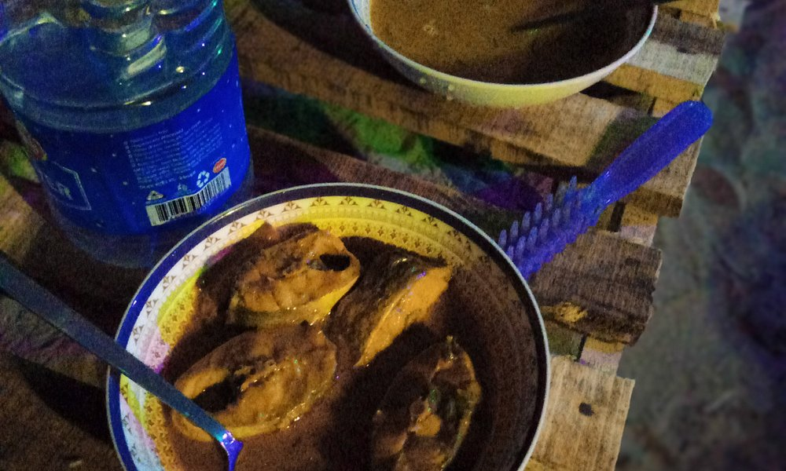
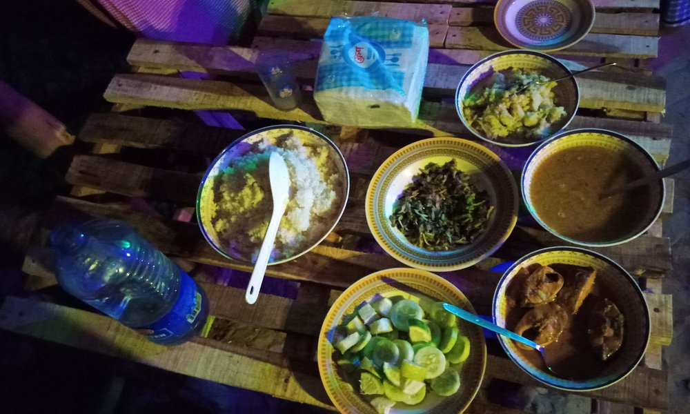
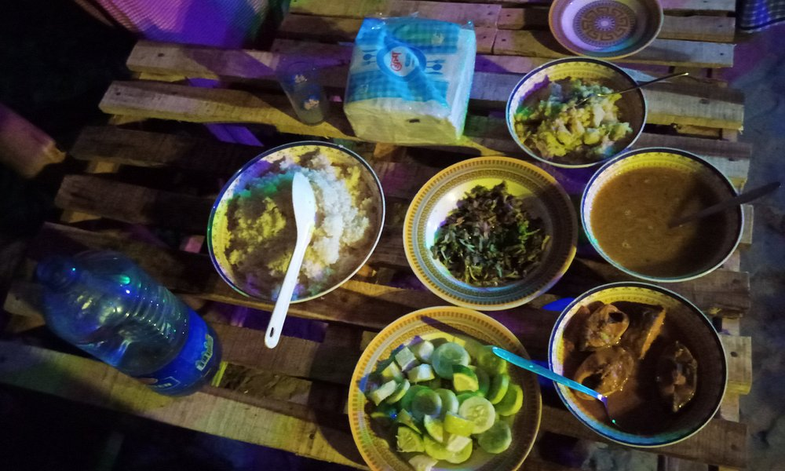
 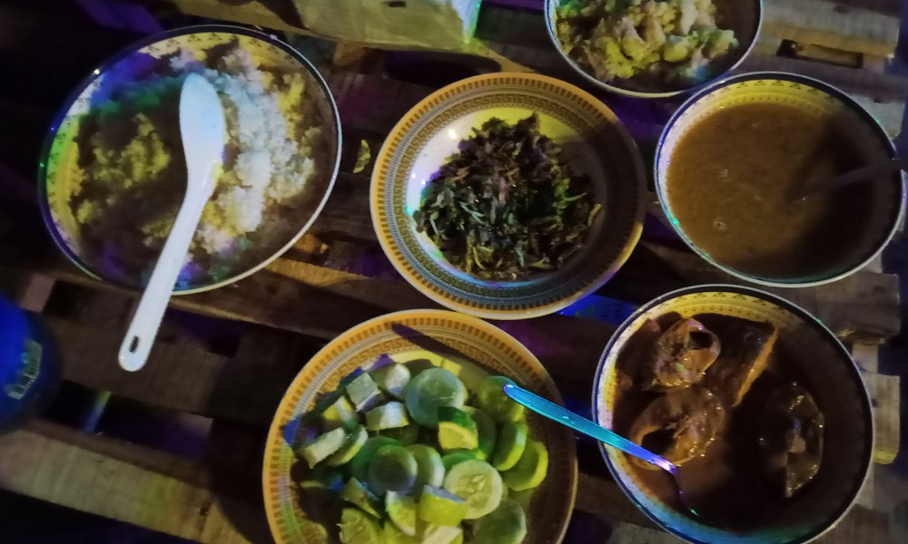
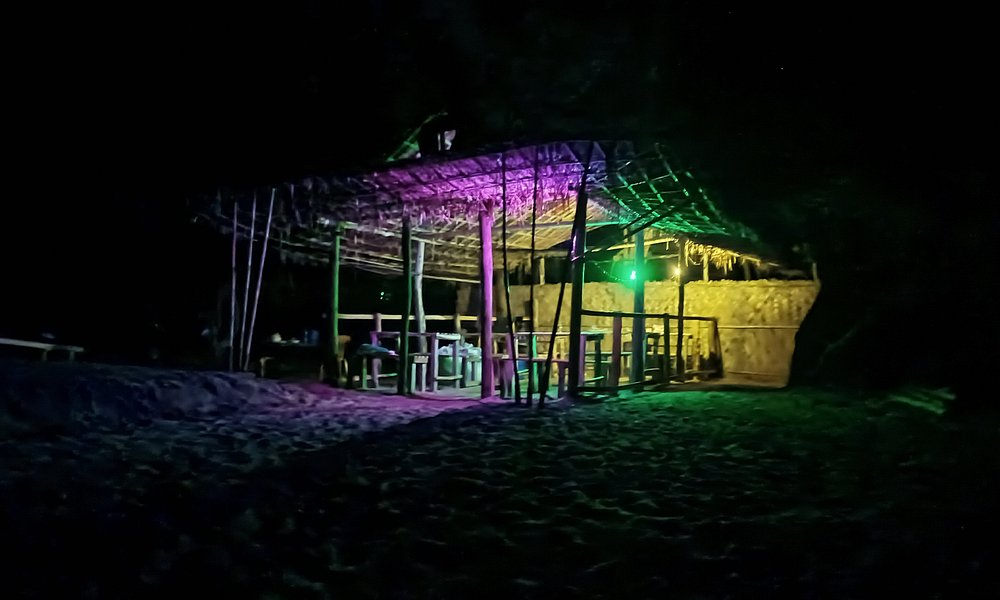
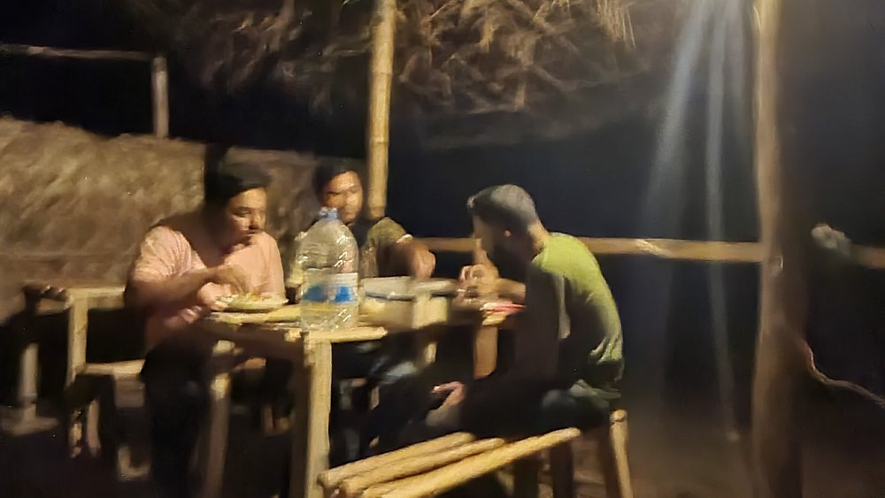
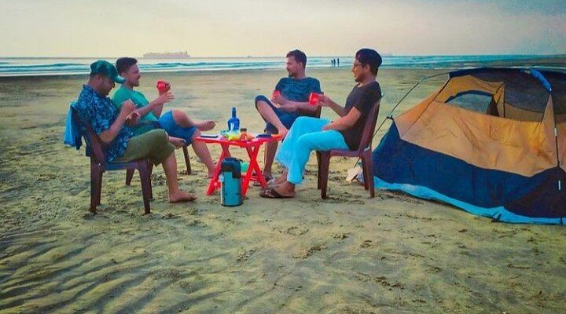
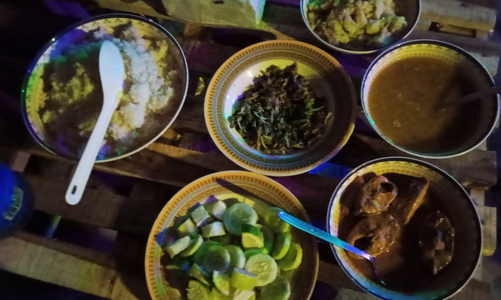
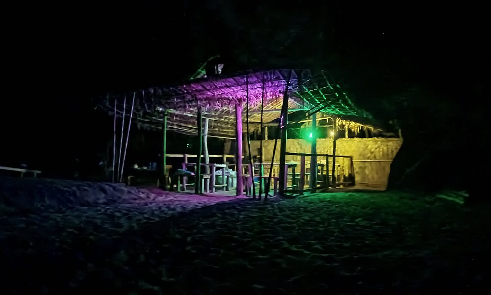
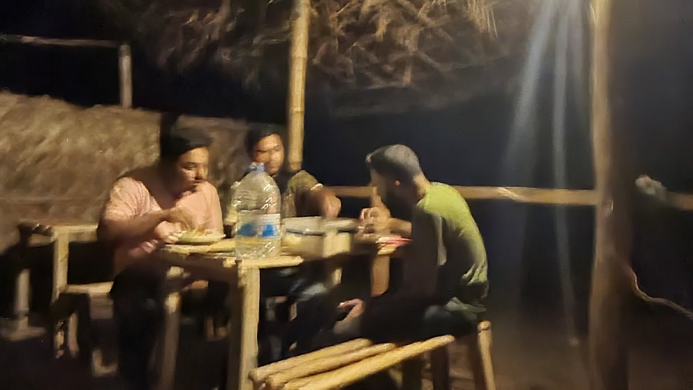
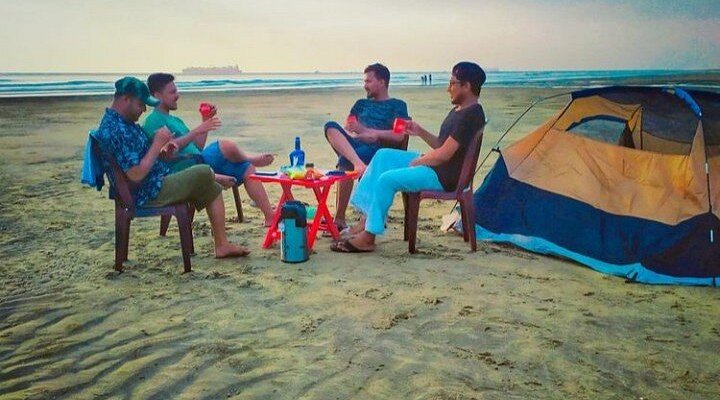